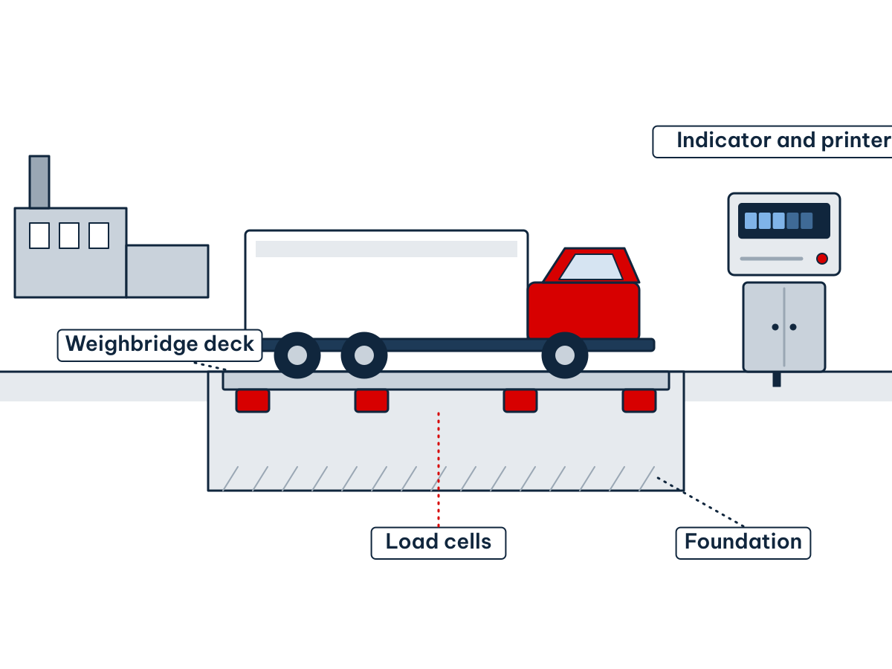

为何秤在水泥厂里早早失效
水泥厂或采石场会从各个方向同时侵蚀地磅。以下是 HearS 在设计中重点防范的四大失效因素。
无处不在的磨蚀性粉尘
水泥和生料粉尘会渗入接线盒、连接器和电缆入口。电子称重传感器先出现漂移，随后失效 — 通常发生在生产旺季中途，卡车在门口排起长队。
振动与冲击载荷
破碎机、磨机和川流不息的重型卡车使基坑和秤台同时震动。应变片式传感器及其电缆每个班次都要承受这种冲击。
泥浆、水与高压冲洗
采石场的泥浆用水管从秤台和基坑中冲走；季风降雨则灌满水管冲不到的地方。基坑积水是地磅失效的典型原因。
雷击与电涌
开阔的采石场地面以及通往控制室的长距离电缆使户外秤成为雷击目标 — 越南每年记录约 200 万次雷击。
静压式解决方案
Emery Winslow 静压式称重传感器在秤体处没有任何电子部件：不锈钢活塞和膜片将载荷转化为流体压力，管路将该压力传递到位于洁净干燥房间内的求和总计仪（Summing Totalizer）。称重点的粉尘、泥浆、水和雷电接触不到任何电子部件 — Emery Winslow 对其静压式传感器提供终身质保（厂家承诺），涵盖水、浸水、湿度、高压冲洗、雷击和电涌造成的损坏。
- 密封不锈钢传感器 — 粉尘和水无处侵入
- 基坑内无接线盒或信号电缆
- 唯一的电子信号在控制室产生，而非在秤体处
- HearS 在越南提供勘测、机械设计、安装和校准支持

适用场景
门口地磅
RoadWeigh II 钢台面或混凝土台面地磅，用于石灰石、煤炭和石膏进厂、水泥和熟料出厂称重 — 是工厂的营收计量表。
筒仓与料斗称重
在生料、窑喂料和水泥筒仓以及装车料斗下方安装 136 Series 和 120 Series 传感器，用于库存和配料控制。
采石场与骨料
为越南重点项目供料的独立采石场 — 2026–2030 年分配约 3.06 亿立方米建筑石料 — 需要能在同样的粉尘和泥浆环境中存活的秤。
数字化层：每一次称重都成为一条记录
准确称重只是起点。每辆卡车经过地磅都可以自动记录 — 车牌、时间、净重、交货合同。到班次结束时，调度无需人工汇总即可获得按客户统计的产出报告，秤量数据与单据之间的任何差异当天就会显现。
您在运营水泥厂或采石场吗？
请告诉我们现场情况、车辆情况以及反复出现的故障。HearS 将提出设计方案和工作范围。
想先沟通一下？请通过 Zalo 发送您现有秤的照片 — HearS 会在报价前先为您提供建议。